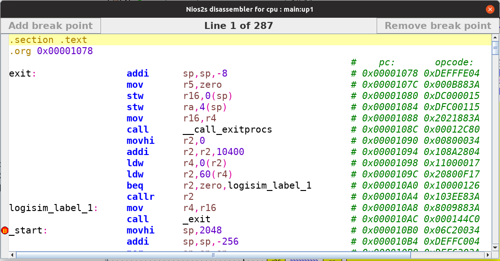

反汇编器

反汇编器将存储器中存储的程序转换为人类可读的内容。如果可用，反汇编器会使用 ELF 节头来提取已定义的标签和节。否则，它直接使用存储器中存储的信息来解码信息。反汇编器具有以下描述的一些功能。
自动标签检测
在可能的情况下，反汇编器会尝试自动检测程序中的标签。检测到的标签将被称为 logisim_label_<x> ，其中 <x> 是从 1 开始的数字。标签从上到下排序，以便于搜索。
自动程序计数器和操作码插入
在检测到指令的每一行之后，反汇编器会插入一条注释，其中包含程序计数器（pc）值和指令的二进制操作码。
断点支持
反汇编器支持断点。可以通过点击指令旁边的左侧垂直条，或者选择一行并按下 b，或者点击按钮 添加断点 或 移除断点 来设置/清除断点。
当 CPU 到达断点时，它将停止执行，并且 仿真状态控制器 将指示已到达断点。断点旁边的指令将不会被执行。最后，在到达断点时，反汇编器会自动跳转到遇到断点的行。